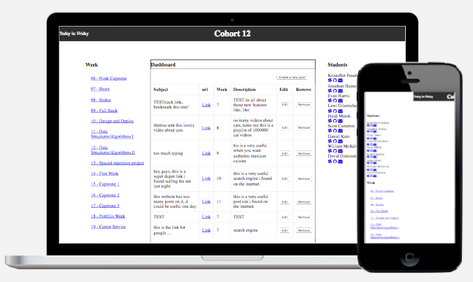

Ahoy-hoy, full stack developer in the Bay Area, California. Started out as art student along with a couple of QA tours at SEGA & EA. Made the switch to production at Zynga, building a couple flagship titles. From there, decided to make a career pivot to web development where the desire spawned from back when attending art school. Now with rigorous training with Javascript and Node.js, ready to start building a career as a developer.
Projects
Observer Dashboard

A simple gui dashboard that students can view and contribute to by adding useful resources such as links posted in slack, or material shared by mentors.
Built with MongoDB, Express, React, Redux, Node.js & willpower.
- Technical Skills